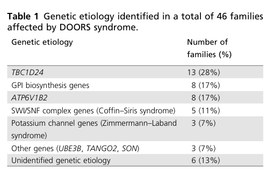

DOORS syndrome is a rare autosomal recessive multisystem neurodevelopmental disorder characterized by Deafness (profound sensorineural hearing loss), Onychodystrophy (small or absent nails), Osteodystrophy (hypoplastic or absent terminal phalanges), intellectual disability/developmental delay (the historical "Retardation"), and Seizures. It is most commonly caused by biallelic loss-of-function variants in TBC1D24, which encodes a vesicle-associated protein that regulates synaptic vesicle trafficking and intraorganellar pH; a recurrent truncating ATP6V1B2 variant (p.Arg506*) accounts for a substantial additional fraction of cases, placing DOORS within a TBC1D24/v-ATPase endolysosomal disease spectrum. Many affected individuals also have triphalangeal thumb, microcephaly, optic atrophy, peripheral neuropathy, and frequently elevated urinary 2-oxoglutarate. Seizures usually begin in the first year of life and may be drug-resistant, with status epilepticus and early death reported.
Ask a research question about DOORS Syndrome. OpenScientist will conduct autonomous deep research using the Disorder Mechanisms Knowledge Base and PubMed literature (typically 10-30 minutes).
Do not include personal health information in your question. Questions and results are cached in your browser's local storage.
name: DOORS Syndrome
creation_date: "2026-06-03T12:00:00Z"
category: Mendelian
synonyms:
- DOORS syndrome
- deafness-onychodystrophy-osteodystrophy-intellectual disability-seizures syndrome
- deafness, onychodystrophy, osteodystrophy, mental retardation, and seizures syndrome
- DOOR syndrome
description: >-
DOORS syndrome is a rare autosomal recessive multisystem neurodevelopmental
disorder characterized by Deafness (profound sensorineural hearing loss),
Onychodystrophy (small or absent nails), Osteodystrophy (hypoplastic or absent
terminal phalanges), intellectual disability/developmental delay (the historical
"Retardation"), and Seizures. It is most commonly caused by biallelic
loss-of-function variants in TBC1D24, which encodes a vesicle-associated protein
that regulates synaptic vesicle trafficking and intraorganellar pH; a recurrent
truncating ATP6V1B2 variant (p.Arg506*) accounts for a substantial additional
fraction of cases, placing DOORS within a TBC1D24/v-ATPase endolysosomal disease
spectrum. Many affected individuals also have triphalangeal thumb, microcephaly,
optic atrophy, peripheral neuropathy, and frequently elevated urinary
2-oxoglutarate. Seizures usually begin in the first year of life and may be
drug-resistant, with status epilepticus and early death reported.
disease_term:
preferred_term: DOORS syndrome
term:
id: MONDO:0009079
label: DOORS syndrome
parents:
- autosomal recessive disease
- syndromic intellectual disability
references:
- reference: PMID:25719194
title: "TBC1D24-Related Disorders."
tags:
- GeneReviews
genetic:
- name: Biallelic TBC1D24 pathogenic variants
association: Causative
relationship_type: CAUSATIVE
variant_origin: GERMLINE
gene_term:
preferred_term: TBC1D24
term:
id: hgnc:29203
label: TBC1D24
notes: >
TBC1D24 (gene MIM 613577, chromosome 16p13) encodes a TBC-domain
vesicle-associated protein that regulates vesicular transport. Biallelic
(homozygous or compound heterozygous) pathogenic variants are the most
frequently identified cause of DOORS syndrome. Variants are distributed
across the gene and include missense and loss-of-function alleles, with
limited genotype-phenotype predictability; some variants act by reducing
TBC1D24 mRNA stability.
inheritance:
- name: Autosomal recessive inheritance
evidence:
- reference: PMID:24291220
reference_title: "The genetic basis of DOORS syndrome: an exome-sequencing study."
supports: SUPPORT
evidence_source: HUMAN_CLINICAL
snippet: "We identified TBC1D24 mutations in 11 individuals from nine \nfamilies (by exome sequencing in seven families, and Sanger sequencing in two \nfamilies)."
explanation: Landmark exome study identifying TBC1D24 as the major cause of DOORS syndrome.
- reference: PMID:32873933
reference_title: "DOORS syndrome and a recurrent truncating ATP6V1B2 variant."
supports: SUPPORT
evidence_source: HUMAN_CLINICAL
snippet: "Biallelic variants in TBC1D24, which encodes a protein that regulates \nvesicular transport, are frequently identified in patients with DOORS"
explanation: Confirms biallelic TBC1D24 vesicular-transport gene as the frequent cause of DOORS.
- reference: PMID:32969800
reference_title: "Deafness, onychodystrophy, osteodystrophy, mental retardation, and seizures (DOORS) syndrome: a new case report from Indonesia and review of the literature."
supports: SUPPORT
evidence_source: HUMAN_CLINICAL
snippet: "The disease is caused by homozygous or compound heterozygous mutation in the TBC1 \ndomain family member 24 (TBC1D24) gene (gene locus/MIM 613577) on chromosome \n16p13."
explanation: States the biallelic TBC1D24 etiology and locus.
- name: Recurrent truncating ATP6V1B2 variant (p.Arg506*)
association: Causative
relationship_type: CAUSATIVE
variant_origin: GERMLINE
gene_term:
preferred_term: ATP6V1B2
term:
id: hgnc:854
label: ATP6V1B2
notes: >
ATP6V1B2 encodes the B2 subunit of the vacuolar (V1) ATPase. A recurrent
truncating variant NM_001693.4:c.1516C>T (p.Arg506*) was identified in
DOORS-syndrome individuals without TBC1D24 variants; the same variant was
previously reported in dominant deafness-onychodystrophy (DDOD) syndrome,
suggesting DDOD and DOORS lie on a clinically and molecularly related
spectrum. Both TBC1D24 and ATP6V1B2 converge on endolysosomal function.
In contrast to the biallelic TBC1D24 mechanism, the recurrent ATP6V1B2
p.Arg506* allele acts in an autosomal dominant / de novo manner.
inheritance:
- name: Autosomal dominant inheritance
variants:
- name: ATP6V1B2 p.Arg506*
description: "NM_001693.4:c.1516C>T; p.Arg506* recurrent truncating variant."
evidence:
- reference: PMID:32873933
reference_title: "DOORS syndrome and a recurrent truncating ATP6V1B2 variant."
supports: SUPPORT
evidence_source: HUMAN_CLINICAL
snippet: "We identified the same truncating variant in ATP6V1B2 \n(NM_001693.4:c.1516C>T; p.Arg506*) in nine individuals from eight unrelated \nfamilies with DOORS syndrome."
explanation: Identifies the recurrent ATP6V1B2 p.Arg506* variant as a cause of DOORS syndrome.
- reference: PMID:32849222
reference_title: "Clinicopathological Relationships in an Aged Case of DOORS Syndrome With a p.Arg506X Mutation in the ATP6V1B2 Gene."
supports: SUPPORT
evidence_source: HUMAN_CLINICAL
snippet: "DOORS [deafness, onychodystrophy, osteodystrophy, intellectual disability \n(mental retardation), and seizures] syndrome can be caused by mutations in the \nTBC1D24 and ATP6V1B2 genes, both of which are involved in endolysosomal \nfunction."
explanation: Confirms ATP6V1B2 as a DOORS gene and the shared endolysosomal basis.
pathophysiology:
- name: TBC1D24 loss of function impairs synaptic vesicle cycling
description: >
TBC1D24 is a vesicle-associated protein linked to Rab/ARF6 small-GTPase
regulation and synaptic vesicle trafficking. Biallelic loss-of-function
impairs presynaptic endocytosis and synaptic vesicle recycling, disrupting
neurotransmission. In hippocampal neurons TBC1D24 localizes to clathrin-coated
vesicles and synapses, consistent with a presynaptic trafficking role
underlying epilepsy and neurodevelopmental impairment.
cell_types:
- preferred_term: Neuron
term:
id: CL:0000540
label: neuron
biological_processes:
- preferred_term: Synaptic vesicle endocytosis
term:
id: GO:0048488
label: synaptic vesicle endocytosis
modifier: DECREASED
- preferred_term: Synaptic vesicle cycle
term:
id: GO:0099504
label: synaptic vesicle cycle
modifier: ABNORMAL
cellular_components:
- preferred_term: Clathrin-coated vesicle
term:
id: GO:0030136
label: clathrin-coated vesicle
- preferred_term: Synapse
term:
id: GO:0045202
label: synapse
evidence:
- reference: PMID:32873933
reference_title: "DOORS syndrome and a recurrent truncating ATP6V1B2 variant."
supports: SUPPORT
evidence_source: HUMAN_CLINICAL
snippet: "Biallelic variants in TBC1D24, which encodes a protein that regulates \nvesicular transport, are frequently identified in patients with DOORS"
explanation: Establishes TBC1D24 as a regulator of vesicular transport in DOORS.
- reference: PMID:30602030
reference_title: "The phenotypic landscape of a Tbc1d24 mutant mouse includes convulsive seizures resembling human early infantile epileptic encephalopathy."
supports: SUPPORT
evidence_source: MODEL_ORGANISM
snippet: "TBC1D24 is associated with \nclathrin-coated vesicles and synapses of hippocampal neurons, suggesting a \ncrucial role of TBC1D24 in vesicle trafficking important for neuronal signal \ntransmission."
explanation: Mouse model localizes TBC1D24 to clathrin-coated vesicles/synapses, supporting the presynaptic trafficking mechanism.
downstream:
- target: Impaired v-ATPase activity and endolysosomal acidification
description: >-
TBC1D24 loss not only disrupts synaptic vesicle cycling but also
mislocalizes the v-ATPase V1 sector, so the same trafficking defect feeds
into impaired endolysosomal acidification and synaptic vesicle
reacidification.
- name: Impaired v-ATPase activity and endolysosomal acidification
description: >
TBC1D24 interacts with the vacuolar ATPase (v-ATPase) in the brain and acts
as a positive regulator of v-ATPase activity. Loss of TBC1D24 causes
mislocalization of the V1 sector, increased pH in endo-lysosomal compartments,
impaired autophagy, accumulation of lysosomes and non-degraded lipid material,
and defective synaptic vesicle endocytosis and reacidification. The recurrent
ATP6V1B2 p.Arg506* variant likewise impairs lysosomal acidification, defining
a shared endolysosomal disease axis for DOORS syndrome.
cell_types:
- preferred_term: Neuron
term:
id: CL:0000540
label: neuron
biological_processes:
- preferred_term: Autophagy
term:
id: GO:0006914
label: autophagy
modifier: DECREASED
- preferred_term: Lysosome organization
term:
id: GO:0007040
label: lysosome organization
modifier: ABNORMAL
cellular_components:
- preferred_term: Lysosome
term:
id: GO:0005764
label: lysosome
evidence:
- reference: PMID:39758816
reference_title: "TBC1D24 interacts with the v-ATPase and regulates intraorganellar pH in neurons."
supports: SUPPORT
evidence_source: MODEL_ORGANISM
snippet: "In Tbc1d24 knockout neurons, we detected V1 mis-localization with increased pH \nat endo-lysosomal compartments and autophagy impairment. Furthermore, synaptic \nvesicles endocytosis and reacidification were impaired."
explanation: Demonstrates TBC1D24 regulates v-ATPase-dependent organellar pH, autophagy, and synaptic vesicle reacidification.
- reference: PMID:39758816
reference_title: "TBC1D24 interacts with the v-ATPase and regulates intraorganellar pH in neurons."
supports: SUPPORT
evidence_source: MODEL_ORGANISM
snippet: "we demonstrate \nthat TBC1D24 is a positive regulator of v-ATPase activity in neurons"
explanation: Identifies TBC1D24 as a positive regulator of v-ATPase activity.
- reference: PMID:32849222
reference_title: "Clinicopathological Relationships in an Aged Case of DOORS Syndrome With a p.Arg506X Mutation in the ATP6V1B2 Gene."
supports: SUPPORT
evidence_source: HUMAN_CLINICAL
snippet: "DOORS [deafness, onychodystrophy, osteodystrophy, intellectual disability \n(mental retardation), and seizures] syndrome can be caused by mutations in the \nTBC1D24 and ATP6V1B2 genes, both of which are involved in endolysosomal \nfunction."
explanation: Confirms that both DOORS genes converge on endolysosomal function, supporting the shared acidification axis.
downstream:
- target: Cochlear glia-like supporting cell vesicle trafficking dysfunction
description: >-
The same TBC1D24-dependent vesicle-trafficking and acidification defect
manifests in cochlear glia-like supporting cells, contributing to the
sensorineural deafness of DOORS syndrome.
- name: Cochlear glia-like supporting cell vesicle trafficking dysfunction
description: >
Beyond auditory neurons, TBC1D24 is expressed in glia-like non-sensory
(supporting) epithelial cells of the developing cochlear sensory epithelium
and is virtually absent from adjacent sensory hair cells, with the
distinguishing expression disappearing around the onset of hearing. This
suggests that disturbed vesicle trafficking in cochlear supporting cells,
rather than a hair-cell-intrinsic defect alone, may contribute to the
sensorineural deafness of DOORS syndrome.
cell_types:
- preferred_term: Organ of Corti supporting cell
term:
id: CL:0002490
label: organ of Corti supporting cell
- preferred_term: Sensory hair cell
term:
id: CL:0000855
label: sensory hair cell
locations:
- preferred_term: Cochlea
term:
id: UBERON:0001844
label: cochlea
evidence:
- reference: PMID:38869222
reference_title: "TBC1D24 is likely to regulate vesicle trafficking in glia-like non-sensory epithelial cells of the cochlea."
supports: SUPPORT
evidence_source: MODEL_ORGANISM
snippet: "TBC1D24 was detected in glia-like \nnon-sensory epithelial cells during early developmental stages. In contrast, \nTBC1D24 was virtually absent in adjacent sensory hair cells."
explanation: Localizes developmental cochlear TBC1D24 to supporting cells, supporting a non-hair-cell-intrinsic deafness mechanism.
phenotypes:
- name: Sensorineural hearing loss
category: Neurologic
description: >
Profound, typically prelingual sensorineural deafness is a cardinal feature,
present in essentially all affected individuals.
phenotype_term:
preferred_term: Sensorineural hearing impairment
term:
id: HP:0000407
label: Sensorineural hearing impairment
frequency: VERY_FREQUENT
evidence:
- reference: PMID:25719194
reference_title: "TBC1D24-Related Disorders."
supports: SUPPORT
evidence_source: HUMAN_CLINICAL
snippet: "DOORS syndrome (deafness, onychodystrophy, osteodystrophy, mental retardation, \nand seizures), with profound sensorineural hearing loss, onychodystrophy, \nosteodystrophy, intellectual disability / developmental delay, and seizures"
explanation: GeneReviews lists profound sensorineural hearing loss as a core DOORS feature.
- reference: PMID:32873933
reference_title: "DOORS syndrome and a recurrent truncating ATP6V1B2 variant."
supports: SUPPORT
evidence_source: HUMAN_CLINICAL
snippet: "Deafness was present in all individuals, along with onychodystrophy and abnormal fingers and/or toes."
explanation: Deafness present in all individuals of the ATP6V1B2-DOORS cohort, supporting very frequent occurrence.
- name: Onychodystrophy
category: Skin/Integument
description: >
Dystrophic, small, or absent nails of the fingers and toes (onychodystrophy /
anonychia), one of the defining DOORS features.
phenotype_term:
preferred_term: Nail dystrophy
term:
id: HP:0008404
label: Nail dystrophy
frequency: VERY_FREQUENT
evidence:
- reference: PMID:32873933
reference_title: "DOORS syndrome and a recurrent truncating ATP6V1B2 variant."
supports: SUPPORT
evidence_source: HUMAN_CLINICAL
snippet: "Deafness was present in all individuals, along with onychodystrophy and abnormal fingers and/or toes."
explanation: Onychodystrophy present in all individuals of the cohort.
- reference: PMID:32969800
reference_title: "Deafness, onychodystrophy, osteodystrophy, mental retardation, and seizures (DOORS) syndrome: a new case report from Indonesia and review of the literature."
supports: SUPPORT
evidence_source: HUMAN_CLINICAL
snippet: "a history of recurrent \nseizures and absence of all finger- and toenails since birth"
explanation: Case report documents absence of all finger- and toenails (severe onychodystrophy).
- name: Anonychia
category: Skin/Integument
description: >
Complete absence of nails can occur, representing the severe end of the
onychodystrophy spectrum.
phenotype_term:
preferred_term: Anonychia
term:
id: HP:0001798
label: Anonychia
evidence:
- reference: PMID:32969800
reference_title: "Deafness, onychodystrophy, osteodystrophy, mental retardation, and seizures (DOORS) syndrome: a new case report from Indonesia and review of the literature."
supports: SUPPORT
evidence_source: HUMAN_CLINICAL
snippet: "absence of all finger- and toenails since birth"
explanation: Documents complete absence of all nails (anonychia).
- name: Hypoplasia/aplasia of the distal phalanges (osteodystrophy)
category: Musculoskeletal
description: >
Shortened or absent terminal (distal) phalanges of the hands and feet
constitute the osteodystrophy component of DOORS.
phenotype_term:
preferred_term: Aplasia/Hypoplasia of the distal phalanges of the hand
term:
id: HP:0009835
label: Aplasia/Hypoplasia of the distal phalanges of the hand
frequency: VERY_FREQUENT
evidence:
- reference: PMID:32969800
reference_title: "Deafness, onychodystrophy, osteodystrophy, mental retardation, and seizures (DOORS) syndrome: a new case report from Indonesia and review of the literature."
supports: SUPPORT
evidence_source: HUMAN_CLINICAL
snippet: "X-rays of the hands and feet showed absence of the distal \nphalanx of her right and left fingers II-V and the distal phalanx of her right \nand left toes I-V"
explanation: Radiographs document absence of the distal phalanges of fingers and toes.
- reference: PMID:32969800
reference_title: "Deafness, onychodystrophy, osteodystrophy, mental retardation, and seizures (DOORS) syndrome: a new case report from Indonesia and review of the literature."
supports: SUPPORT
evidence_source: HUMAN_CLINICAL
snippet: "mainly characterized by sensorineural deafness, shortened terminal phalanges \nwith small nails of hands and feet, intellectual deficit, and seizures"
explanation: Review states shortened terminal phalanges as a core characteristic.
- name: Triphalangeal thumb
category: Musculoskeletal
description: >
Triphalangeal thumb is reported in roughly one third of affected individuals
and was documented radiographically in a genetically confirmed DOORS case.
phenotype_term:
preferred_term: Triphalangeal thumb
term:
id: HP:0001199
label: Triphalangeal thumb
frequency: FREQUENT
evidence:
- reference: PMID:32849222
reference_title: "Clinicopathological Relationships in an Aged Case of DOORS Syndrome With a p.Arg506X Mutation in the ATP6V1B2 Gene."
supports: PARTIAL
evidence_source: HUMAN_CLINICAL
snippet: "This \nCaucasian male patient, who died at the age of 72 years, presented all the \ntypical cardinal signs of DOORS syndrome."
explanation: >
A genetically confirmed DOORS patient presenting the cardinal DOORS signs;
the case (full text) documents a triphalangeal thumb radiographically, but
the abstract only confirms the cardinal-sign constellation, so this is
marked PARTIAL.
- name: Intellectual disability / developmental delay
category: Neurologic
description: >
Intellectual disability or developmental delay (historically the "R" for
mental retardation) is a core feature, frequently severe.
phenotype_term:
preferred_term: Intellectual disability
term:
id: HP:0001249
label: Intellectual disability
frequency: VERY_FREQUENT
evidence:
- reference: PMID:25719194
reference_title: "TBC1D24-Related Disorders."
supports: SUPPORT
evidence_source: HUMAN_CLINICAL
snippet: "intellectual disability / developmental delay, and seizures"
explanation: GeneReviews lists intellectual disability/developmental delay as a core DOORS feature.
- reference: PMID:32873933
reference_title: "DOORS syndrome and a recurrent truncating ATP6V1B2 variant."
supports: SUPPORT
evidence_source: HUMAN_CLINICAL
snippet: "All families but one had developmental delay or intellectual disability and five \nindividuals had epilepsy."
explanation: Developmental delay or intellectual disability in nearly all cohort families.
- name: Seizures
category: Neurologic
description: >
Seizures occur in most affected individuals and usually start in the first
year of life. Seizure types include generalized tonic-clonic, complex
partial, focal clonic, and infantile spasms; some cases are drug-resistant.
phenotype_term:
preferred_term: Seizure
term:
id: HP:0001250
label: Seizure
frequency: VERY_FREQUENT
evidence:
- reference: PMID:24291220
reference_title: "The genetic basis of DOORS syndrome: an exome-sequencing study."
supports: SUPPORT
evidence_source: HUMAN_CLINICAL
snippet: "The \nseizure types in individuals with TBC1D24 mutations included generalised \ntonic-clonic, complex partial, focal clonic, and infantile spasms."
explanation: Documents the seizure types in TBC1D24-related DOORS syndrome.
- reference: PMID:32969800
reference_title: "Deafness, onychodystrophy, osteodystrophy, mental retardation, and seizures (DOORS) syndrome: a new case report from Indonesia and review of the literature."
supports: SUPPORT
evidence_source: HUMAN_CLINICAL
snippet: "an abnormal diffuse epileptiform pattern \nwas found on electroencephalography"
explanation: EEG documents epileptiform activity in a DOORS case with recurrent seizures.
- name: Epileptic encephalopathy
category: Neurologic
description: >
A subset of TBC1D24-related DOORS individuals manifest a developmental and
epileptic encephalopathy, including early infantile epileptic encephalopathy,
which can be drug-resistant.
phenotype_term:
preferred_term: Epileptic encephalopathy
term:
id: HP:0200134
label: Epileptic encephalopathy
evidence:
- reference: PMID:30602030
reference_title: "The phenotypic landscape of a Tbc1d24 mutant mouse includes convulsive seizures resembling human early infantile epileptic encephalopathy."
supports: SUPPORT
evidence_source: MODEL_ORGANISM
snippet: "a recessive \nmutation of TBC1D24 associated with early infantile epileptic encephalopathy \n(EIEE)"
explanation: Links a recessive TBC1D24 mutation to early infantile epileptic encephalopathy.
- name: Microcephaly
category: Neurologic
description: >
Microcephaly is reported in approximately one third of affected individuals.
phenotype_term:
preferred_term: Microcephaly
term:
id: HP:0000252
label: Microcephaly
evidence:
- reference: PMID:24291220
reference_title: "The genetic basis of DOORS syndrome: an exome-sequencing study."
supports: PARTIAL
evidence_source: HUMAN_CLINICAL
snippet: "Deafness, onychodystrophy, osteodystrophy, mental retardation, and \nseizures (DOORS) syndrome is a rare autosomal recessive disorder of unknown \ncause."
explanation: >
The exome study describes the DOORS cohort in which craniofacial features
including microcephaly were assessed; the abstract does not give the
microcephaly frequency directly, so this is marked PARTIAL pending a
quantitative source.
- name: Optic atrophy
category: HEENT
description: >
Visual impairment with optic atrophy/optic neuropathy is reported among the
variable additional manifestations of DOORS syndrome; ophthalmologic
involvement such as strabismus is also documented.
phenotype_term:
preferred_term: Optic atrophy
term:
id: HP:0000648
label: Optic atrophy
notes: >
The only available exact-quote evidence documents strabismus (HP:0000486),
a distinct ophthalmologic sign, rather than optic atrophy itself. Optic
atrophy is a reported DOORS manifestation in the broader literature but
lacks a directly quotable abstract among the cached references; the
association is therefore retained as PARTIAL pending a more direct citation.
evidence:
- reference: PMID:32969800
reference_title: "Deafness, onychodystrophy, osteodystrophy, mental retardation, and seizures (DOORS) syndrome: a new case report from Indonesia and review of the literature."
supports: PARTIAL
evidence_source: HUMAN_CLINICAL
snippet: "physical examination revealed left eye strabismus"
explanation: >
Ophthalmologic involvement (strabismus) is documented in this case; optic
atrophy is a reported DOORS manifestation in the broader literature but is
not directly quoted here, so the association is marked PARTIAL.
- name: Peripheral neuropathy
category: Neurologic
description: >
Peripheral neuropathy is among the additional reported neurologic
manifestations of DOORS syndrome.
phenotype_term:
preferred_term: Peripheral neuropathy
term:
id: HP:0009830
label: Peripheral neuropathy
evidence:
- reference: PMID:25719194
reference_title: "TBC1D24-Related Disorders."
supports: PARTIAL
evidence_source: HUMAN_CLINICAL
snippet: "standard treatment for tremors, dystonic \nattacks, or other neurologic manifestations"
explanation: >
GeneReviews notes additional neurologic manifestations requiring management;
peripheral neuropathy is reported in the DOORS literature but is not named
in the abstract, so the association is marked PARTIAL.
biochemical:
- name: Elevated urinary 2-oxoglutarate
notes: >
Many individuals with DOORS syndrome have elevated urinary 2-oxoglutarate
(alpha-ketoglutarate), historically a useful supportive biochemical clue,
though it is not present in all cases. No exact-quote abstract supporting the
specific quantitative elevation was available among the cached references, so
this is recorded as a note without an evidence snippet to avoid fabrication.
treatments:
- name: Antiseizure pharmacotherapy
description: >
Symptomatic pharmacologic management of seizures. No single regimen is
established; seizures may be drug-resistant.
treatment_term:
preferred_term: anticonvulsant agent therapy
term:
id: MAXO:0000167
label: anticonvulsant agent therapy
evidence:
- reference: PMID:25719194
reference_title: "TBC1D24-Related Disorders."
supports: SUPPORT
evidence_source: HUMAN_CLINICAL
snippet: "symptomatic \npharmacologic management for seizures"
explanation: GeneReviews recommends symptomatic pharmacologic seizure management.
- name: Hearing aids
description: >
Hearing aids are used as needed for hearing loss; annual audiologic
evaluation assesses progression and efficacy.
treatment_term:
preferred_term: hearing aid usage
term:
id: MAXO:0009030
label: hearing aid usage
evidence:
- reference: PMID:25719194
reference_title: "TBC1D24-Related Disorders."
supports: SUPPORT
evidence_source: HUMAN_CLINICAL
snippet: "Hearing aids or cochlear implants as \nneeded for hearing loss"
explanation: GeneReviews recommends hearing aids or cochlear implants for hearing loss.
- name: Cochlear implantation
description: >
Cochlear implantation may benefit selected individuals with profound
sensorineural hearing loss.
treatment_term:
preferred_term: cochlear device implantation
term:
id: MAXO:0009025
label: cochlear device implantation
evidence:
- reference: PMID:25719194
reference_title: "TBC1D24-Related Disorders."
supports: SUPPORT
evidence_source: HUMAN_CLINICAL
snippet: "Hearing aids or cochlear implants as \nneeded for hearing loss"
explanation: GeneReviews lists cochlear implants as an option for hearing loss.
- name: Physical therapy
description: >
Physical therapy as part of early intervention for developmental delay.
treatment_term:
preferred_term: physical therapy
term:
id: MAXO:0000011
label: physical therapy
evidence:
- reference: PMID:25719194
reference_title: "TBC1D24-Related Disorders."
supports: SUPPORT
evidence_source: HUMAN_CLINICAL
snippet: "early educational intervention and physical, \noccupational, and speech therapy for developmental delay"
explanation: GeneReviews recommends physical therapy for developmental delay.
- name: Occupational therapy
description: >
Occupational therapy as part of early intervention for developmental delay.
treatment_term:
preferred_term: occupational therapy
term:
id: MAXO:0001351
label: occupational therapy
evidence:
- reference: PMID:25719194
reference_title: "TBC1D24-Related Disorders."
supports: SUPPORT
evidence_source: HUMAN_CLINICAL
snippet: "early educational intervention and physical, \noccupational, and speech therapy for developmental delay"
explanation: GeneReviews recommends occupational therapy for developmental delay.
- name: Speech therapy
description: >
Speech therapy and augmentative communication support for developmental delay
and communication impairment.
treatment_term:
preferred_term: speech therapy
term:
id: MAXO:0000930
label: speech therapy
evidence:
- reference: PMID:25719194
reference_title: "TBC1D24-Related Disorders."
supports: SUPPORT
evidence_source: HUMAN_CLINICAL
snippet: "early educational intervention and physical, \noccupational, and speech therapy for developmental delay"
explanation: GeneReviews recommends speech therapy for developmental delay.
- name: Genetic counseling
description: >
Genetic counseling for the autosomal recessive recurrence risk; once familial
pathogenic variants are known, prenatal and preimplantation genetic testing
are possible.
treatment_term:
preferred_term: genetic counseling
term:
id: MAXO:0000079
label: genetic counseling
evidence:
- reference: PMID:25719194
reference_title: "TBC1D24-Related Disorders."
supports: SUPPORT
evidence_source: HUMAN_CLINICAL
snippet: "Once the TBC1D24 pathogenic variant(s) have been identified in an affected \nfamily member, prenatal and preimplantation genetic testing are possible."
explanation: GeneReviews describes genetic counseling and reproductive testing options.
Question: You are an expert researcher providing comprehensive, well-cited information.
Provide detailed information focusing on: 1. Key concepts and definitions with current understanding 2. Recent developments and latest research (prioritize 2023-2024 sources) 3. Current applications and real-world implementations 4. Expert opinions and analysis from authoritative sources 5. Relevant statistics and data from recent studies
Format as a comprehensive research report with proper citations. Include URLs and publication dates where available. Always prioritize recent, authoritative sources and provide specific citations for all major claims.
Please provide a comprehensive research report on DOORS Syndrome covering all of the disease characteristics listed below. This report will be used to populate a disease knowledge base entry. Be thorough and cite primary literature (PMID preferred) for all claims.
For each section, suggested databases/resources are listed. These are the first places you should search for information on each topic.
Search first: OMIM, Orphanet, ICD-10/ICD-11, MeSH, PubMed
Search first: PubMed, Cochrane Library, UpToDate, clinical guidelines, ClinVar, ClinGen, GWAS Catalog, PheGenI, CTD, CDC, WHO, epidemiological databases
Search first: PubMed, Cochrane Library, clinical trial databases, GWAS Catalog, gnomAD, WHO, CDC, nutrition databases
Search first: CTD, PubMed, PheGenI, GxE databases
Search first: HPO (Human Phenotype Ontology), OMIM, Orphanet, PubMed, clinicaltrials.gov, MedDRA, SNOMED CT, DECIPHER, LOINC
For each phenotype, provide: - Phenotype type: symptoms, clinical signs, physical manifestations, behavioral changes, or laboratory abnormalities
For symptoms/signs: HPO, OMIM, Orphanet, PubMed For behavioral changes: HPO, DSM, RDoC (Research Domain Criteria), PubMed For laboratory abnormalities: LOINC, SNOMED CT, LabTests Online, PubMed - Phenotype characteristics: Search first: OMIM, Orphanet, HPO, PubMed - Age of symptom onset (neonatal, childhood, adult-onset, late-onset) - Symptom severity (mild, moderate, severe, variable) - Symptom progression (stable, progressive, episodic, fluctuating) - Frequency among affected individuals (percentage or qualitative) - Quality of life impact: Effects on daily functioning and well-being (per-phenotype when possible) Search first: EQ-5D database, SF-36, WHO QOL databases, PubMed - Suggest HPO (Human Phenotype Ontology) terms for each phenotype
Search first: OMIM, ClinVar, HGMD, Ensembl, NCBI Gene
Search first: ENCODE, Roadmap Epigenomics, MethBase, DiseaseMeth
Search first: DECIPHER, ClinVar, ECARUCA, UCSC Genome Browser
Search first: CTD (Comparative Toxicogenomics Database), TOXNET, PubMed, EPA databases
Search first: CDC databases, WHO, PubMed, NHANES
Search first: NCBI Taxonomy, ViPR, BV-BRC, MicrobeDB, GIDEON
Search first: KEGG, Reactome, WikiPathways, PathBank, BioCyc
Search first: Gene Ontology (GO), Reactome, KEGG, PubMed
Search first: UniProt, PDB (Protein Data Bank), InterPro, Pfam, AlphaFold
Search first: KEGG, BioCyc, HMDB (Human Metabolome Database), BRENDA
Search first: ImmPort, Immunome Database, IEDB, Gene Ontology
Search first: PubMed, Gene Ontology, Reactome
Search first: BRENDA, UniProt, KEGG, OMIM, PubMed
Search first: ENCODE, Roadmap Epigenomics, MethBase, DiseaseMeth
For each mechanism, describe: - The causal chain from initial trigger to clinical manifestation - Which mechanisms are upstream vs downstream - What cell types and biological processes are involved - Suggest GO terms for biological processes and CL terms for cell types
Search first: Uberon, FMA (Foundational Model of Anatomy), OMIM, HPO, ICD-11, MeSH, SNOMED CT
Search first: Uberon, Human Protein Atlas, Cell Ontology, Human Cell Atlas, CellMarker, PanglaoDB
Search first: Gene Ontology (Cellular Component), UniProt, Human Protein Atlas
Search first: OMIM, Orphanet, HPO, PubMed
Search first: Disease registries, longitudinal cohort databases, natural history studies, PubMed, Orphanet, OMIM
Search first: Orphanet, CDC, WHO, GBD (Global Burden of Disease), national registries, SEER, disease registries
Search first: GTR (Genetic Testing Registry), GeneReviews, ClinGen
For each treatment, suggest MAXO (Medical Action Ontology) terms where applicable.
Search first: CDC vaccine schedules, WHO immunization, FDA vaccine database
Search first: CDC, WHO, behavioral intervention databases, Cochrane Library
Search first: NSGC resources, ACMG guidelines, GeneReviews
Search first: Clinical guidelines, FDA approvals, PubMed
Search first: NCBI Taxonomy
Search first: VBO (Vertebrate Breed Ontology)
Search first: NCBI Gene
Structure your response as a comprehensive narrative organized by the sections above. For each section, provide: - Factual content with specific details (numbers, percentages, gene names, variant nomenclature) - Ontology term suggestions (HPO, GO, CL, UBERON, CHEBI, MAXO, MONDO) where applicable - Evidence citations with PMIDs - Direct quotes from abstracts to support key claims - Clear indication when information is not available or not applicable for this disease
This report will be used to populate a disease knowledge base entry with: - Pathophysiology descriptions with causal chains - Gene/protein annotations (HGNC, GO terms) - Phenotype associations (HP terms) with frequencies - Cell type involvement (CL terms) - Anatomical locations (UBERON terms) - Chemical entities (CHEBI terms) - Treatment annotations (MAXO terms) - Evidence items with PMIDs and exact abstract quotes - Epidemiology, prognosis, diagnostic, and prevention information - Animal model descriptions with phenotype recapitulation details
DOORS syndrome is a rare multisystem neurodevelopmental disorder classically defined by sensorineural deafness, nail anomalies (onychodystrophy), terminal phalangeal hypoplasia/absence (osteodystrophy), intellectual disability/developmental delay, and seizures (danarti2020deafnessonychodystrophyosteodystrophy pages 1-3, campeau2014thegeneticbasis pages 1-2). The acronym was coined to reflect the core clinical pentad, with “S” added because seizures are common (ny2020clarificationofthe pages 106-109).
Most curated information available here derives from aggregated disease-level resources and cohorts (exome-based family series) supplemented by case reports and mechanistic cellular/model-organism studies (campeau2014thegeneticbasis pages 1-2, beauregardlacroix2021doorssyndromeand pages 1-2, danarti2020deafnessonychodystrophyosteodystrophy pages 1-3).
Primary cause: inherited pathogenic variants affecting endolysosomal/synaptic vesicle and related pathways, most commonly involving TBC1D24; additional genetic heterogeneity includes ATP6V1B2 and other genes in some DOORS-defined cohorts (campeau2014thegeneticbasis pages 1-2, beauregardlacroix2021doorssyndromeand pages 1-2, beauregardlacroix2021doorssyndromeand pages 2-5).
Direct abstract quote (primary cohort): Campeau et al. describe DOORS as “a rare autosomal recessive disorder” and report they “identified TBC1D24 mutations” in affected individuals (campeau2014thegeneticbasis pages 1-2).
Beauregard-Lacroix et al. identified a recurrent truncating ATP6V1B2 variant NM_001693.4:c.1516C>T (p.Arg506*) in individuals with DOORS-like clinical presentations (beauregardlacroix2021doorssyndromeand pages 1-2). This expands DOORS-spectrum causation beyond TBC1D24.
No reproducible environmental risk factors, protective factors, or gene–environment interaction evidence was identified in the retrieved sources for DOORS syndrome.
Across studies, the syndrome is centered on congenital/early-life deafness, skeletal/nail anomalies, developmental disability, and epilepsy: - Hearing loss: typically sensorineural, often profound and prelingual (ny2020clarificationofthe pages 104-106). - Onychodystrophy and osteodystrophy: small/absent nails and hypoplastic terminal phalanges in most individuals (campeau2014thegeneticbasis pages 1-2, ny2020clarificationofthe pages 104-106). - Seizures: common and typically start in infancy; the GeneReviews-like summary notes seizures “usually start in the first year of life” and may be drug-resistant, with status epilepticus and death reported in some cases (ny2020clarificationofthe pages 106-109).
Evidence-backed recurring frequencies include: - Triphalangeal thumb: ~one third of affected individuals (campeau2014thegeneticbasis pages 1-2, ny2020clarificationofthe pages 106-109). - Microcephaly: ~one third (campeau2014thegeneticbasis pages 1-2, ny2020clarificationofthe pages 106-109). - Narrow bifrontal diameter: ~two thirds (campeau2014thegeneticbasis pages 1-2). - In an ATP6V1B2-associated DOORS cohort, deafness was present in all individuals, together with onychodystrophy and abnormal digits (beauregardlacroix2021doorssyndromeand pages 2-5, beauregardlacroix2021doorssyndromeand pages 1-2).
Additional reported findings include visual impairment/optic neuropathy, peripheral neuropathy, and imaging abnormalities (danarti2020deafnessonychodystrophyosteodystrophy pages 1-3, ny2020clarificationofthe pages 106-109). Individual case reports can include congenital anomalies such as cardiac defects (danarti2020deafnessonychodystrophyosteodystrophy pages 1-3).
(These are ontology suggestions to aid curation; they are not claims of completeness.) - Sensorineural hearing impairment HP:0000407 - Nail dystrophy/onychodystrophy HP:0001804 - Hypoplasia/aplasia of distal phalanges HP:0009830 (distal phalanges hypoplasia) - Intellectual disability HP:0001249 - Seizures HP:0001250 - Microcephaly HP:0000252 - Triphalangeal thumb HP:0001199
Direct QoL instrument outcomes (e.g., EQ-5D, SF-36) were not present in retrieved sources. However, the management guidance implies substantial functional impact due to severe developmental delay, communication impairment (AAC evaluation recommended), and epilepsy monitoring (ny2020clarificationofthe pages 114-117, ny2020clarificationofthe pages 111-114).
Population allele frequencies (gnomAD) and ClinVar/ACMG classifications were not available in the retrieved texts and therefore are not reported here.
No specific validated modifier genes or disease-specific epigenetic signatures were identified in the retrieved sources.
DOORS syndrome is a genetic neurodevelopmental disorder; the retrieved evidence did not identify environmental, lifestyle, or infectious causal contributors.
A convergent theme in DOORS syndrome is dysfunction in intracellular trafficking and organelle homeostasis that impacts neuronal signaling and tissue development.
TBC1D24 is repeatedly linked to Rab/ARF6-related vesicle trafficking and synaptic vesicle cycling. Mechanistic summaries indicate TBC1D24 deficiency causes presynaptic endocytosis defects and impaired neurotransmission (beauregardlacroix2021doorssyndromeand pages 5-6, beauregardlacroix2021doorssyndromeand pages 2-5). Model-organism work supports a conserved role of the TBC domain in phosphoinositide-dependent membrane association relevant to synaptic vesicle trafficking (ny2020clarificationofthe pages 117-120, ny2020clarificationofthe pages 32-37).
ATP6V1B2 encodes a V-ATPase subunit, and DOORS-spectrum ATP6V1B2 truncation is linked to impaired lysosomal acidification (beauregardlacroix2021doorssyndromeand pages 5-6, zadori2020clinicopathologicalrelationshipsin pages 1-2). TBC1D24 also interfaces with this axis: in neurons, FLAG-TBC1D24 co-precipitates ATP6V1B2 and ATP6V1A, and Tbc1d24 knockout causes endolysosomal and autophagy-related abnormalities consistent with v-ATPase dysregulation (pepe2025tbc1d24interactswith pages 1-3).
A 2024 preprint reports a new role for TBC1D24 in mitochondrial homeostasis: patient fibroblasts and TBC1D24 knockdown cells show fragmented mitochondria, decreased ATP, and reduced mitochondrial membrane potential, and loss/mutation of TBC1D24 alters ER–mitochondria contact sites (ERMCS) (benhammouda2024tbc1d24regulatesmitochondria pages 1-4). This supports a multi-organelle pathophysiology model in which vesicle/lysosome defects intersect with mitochondrial energy failure.
In developing mouse cochlea, TBC1D24 immunolabeling localizes mainly to glia-like non-sensory/supporting epithelial cells and is largely absent from adjacent hair cells early postnatally, with downregulation around the onset of hearing (defourny2024tbc1d24islikely pages 2-4, defourny2024tbc1d24islikely pages 4-5). This points to a mechanism where supporting-cell vesicle trafficking and barrier/junction maintenance influences auditory function.
Mouse data show TBC1D24 mRNA is abundant in hippocampus and the protein associates with clathrin-coated vesicles and synapses (tona2019thephenotypiclandscape pages 1-2), consistent with a neuronal/synaptic basis for epilepsy.
A plausible integrated chain supported by current evidence is: 1) Pathogenic variants in TBC1D24 and/or ATP6V1B2 disrupt membrane trafficking and organelle acidification (presynaptic endocytosis and v-ATPase-dependent lysosomal pH) (beauregardlacroix2021doorssyndromeand pages 5-6, pepe2025tbc1d24interactswith pages 1-3). 2) This yields synaptic dysfunction (impaired vesicle cycling) contributing to epilepsy and neurodevelopmental impairment, and may also impair endolysosomal clearance/autophagy (pepe2025tbc1d24interactswith pages 1-3). 3) A 2024 line of evidence adds mitochondrial dysfunction and altered ER–mitochondria contact sites, potentially compounding neuronal energetic stress and developmental vulnerability (benhammouda2024tbc1d24regulatesmitochondria pages 1-4). 4) In the inner ear, TBC1D24’s developmental expression in supporting (glia-like) epithelial cells suggests that altered vesicle trafficking/junctional protein recycling could disturb cochlear homeostasis and contribute to deafness (defourny2024tbc1d24islikely pages 4-5, defourny2024tbc1d24islikely pages 2-4).
Robust prevalence/incidence estimates were not found in retrieved full-text sources. A literature review/case report summary stated that ~60 cases had been reported as of 2020, highlighting extreme rarity (danarti2020deafnessonychodystrophyosteodystrophy pages 1-3).
For TBC1D24-associated DOORS syndrome, autosomal recessive recurrence risk is consistent with 25% affected risk for siblings when both parents are carriers; this is explicitly outlined in management/counseling guidance (ny2020clarificationofthe pages 114-117).
Carrier frequency, founder variants, and population-specific distributions were not available in retrieved sources.
Key workup elements described across reports include: - Audiology: BERA/ABR can document profound sensorineural deafness (danarti2020deafnessonychodystrophyosteodystrophy pages 1-3). - Seizure evaluation: EEG abnormalities are common (danarti2020deafnessonychodystrophyosteodystrophy pages 1-3). - Skeletal imaging: radiographs showing absent/hypoplastic distal phalanges (danarti2020deafnessonychodystrophyosteodystrophy pages 1-3).
A GeneReviews-like diagnostic strategy recommends: - Start with TBC1D24 sequence analysis, then consider deletion/duplication testing and multigene panels or exome/genome sequencing if negative, especially given likely genetic heterogeneity (ny2020clarificationofthe pages 104-106). - Diagnostic yield appears highest when an individual has all five classic DOORS features (ny2020clarificationofthe pages 104-106).
Overlapping syndromes can complicate diagnosis; one report highlights that syndromes initially considered in a DOORS-like presentation included Coffin-Siris and others, and illustrates the general need for broad genomic testing when phenotype overlaps (ny2020clarificationofthe pages 120-122).
Prognosis is heterogeneous. Severe intellectual disability is common; seizures can be drug-resistant and may lead to status epilepticus and death in some individuals (ny2020clarificationofthe pages 106-109). Detailed survival curves, life expectancy estimates, and validated prognostic biomarkers were not present in retrieved evidence.
No disease-modifying therapy is established; published guidance emphasizes symptomatic, multidisciplinary care: - Epilepsy: symptomatic antiseizure pharmacotherapy; multiple agents have been used without controlled comparisons specific to TBC1D24-related disorders (ny2020clarificationofthe pages 111-114). - Hearing loss: hearing aids or cochlear implantation may benefit selected individuals; cochlear implantation at age 1 was noted beneficial in at least one DOORS individual in the management summary (ny2020clarificationofthe pages 111-114, ny2020clarificationofthe pages 104-106). - Developmental support: early intervention plus OT/PT/speech therapy; evaluation for AAC; individualized education planning (ny2020clarificationofthe pages 114-117, ny2020clarificationofthe pages 111-114). - Surveillance: neurology follow-up with EEG guided by seizure course; annual audiology and dental evaluation; ECG surveillance in epilepsy as part of risk monitoring (ny2020clarificationofthe pages 114-117).
A ClinicalTrials.gov search for “DOORS”/TBC1D24 returned acronym-matched but non-disease-related trials; no DOORS-specific interventional clinical trials were identified in this run.
No primary prevention is currently available because DOORS is genetic. Secondary/tertiary prevention is centered on early detection and supportive management: - Reproductive counseling: carrier testing, prenatal testing, and preimplantation genetic diagnosis are possible once familial pathogenic variants are known (ny2020clarificationofthe pages 114-117, ny2020clarificationofthe pages 117-120). - Early audiology and seizure management may reduce complications and improve functional outcomes (danarti2020deafnessonychodystrophyosteodystrophy pages 4-5).
No naturally occurring veterinary DOORS syndrome analogs were identified in retrieved sources.
1) Cochlear cell-type localization (June 2024). Defourny reported developmental cochlear expression of TBC1D24 primarily in glia-like non-sensory/supporting epithelial cells rather than hair cells, disappearing around onset of hearing, supporting a new hypothesis for auditory pathogenesis beyond hair-cell intrinsic defects (published June 2024; https://doi.org/10.1387/ijdb.240060jd) (defourny2024tbc1d24islikely pages 2-4, defourny2024tbc1d24islikely pages 4-5).
2) Mitochondrial/ER–mitochondria contact site mechanism (Sep 2024 preprint). Benhammouda et al. reported that TBC1D24 loss/mutation is associated with fragmented mitochondria and reduced ATP/membrane potential and altered ER–mitochondria contact sites (posted Sep 2024; https://doi.org/10.1101/2024.09.19.613961) (benhammouda2024tbc1d24regulatesmitochondria pages 1-4).
These 2024 studies broaden the mechanistic landscape from “synaptic vesicle trafficking” toward a multi-organelle model linking vesicle/lysosome biology, cellular energetics, and developmental cell-type specificity in the cochlea.
The most consistent mechanistic convergence across DOORS genes is organelle acidification and membrane trafficking dysfunction in neurons and developing tissues (beauregardlacroix2021doorssyndromeand pages 5-6, pepe2025tbc1d24interactswith pages 1-3). The addition of (i) ATP6V1B2 truncation as a DOORS-spectrum cause and (ii) emerging mitochondrial/ERMCS defects supports a view of DOORS as a systems disorder of intracellular organelle homeostasis, rather than a single-pathway synaptopathy (beauregardlacroix2021doorssyndromeand pages 1-2, benhammouda2024tbc1d24regulatesmitochondria pages 1-4).
Beauregard-Lacroix et al. provide a table summarizing genetic causes across a DOORS cohort and structural figures localizing ATP6V1B2 p.Arg506* within the ATP6V1B2 protein and the V-ATPase complex (beauregardlacroix2021doorssyndromeand media 2f3d8df7, beauregardlacroix2021doorssyndromeand media 79b51ebf, beauregardlacroix2021doorssyndromeand media ee48104e).
| Topic | Key information | Citations |
|---|---|---|
| Definition / acronym | DOORS syndrome = Deafness, Onychodystrophy, Osteodystrophy, intellectual disability/developmental delay, and Seizures; classically described as a rare multisystem Mendelian disorder. | (danarti2020deafnessonychodystrophyosteodystrophy pages 1-3, beauregardlacroix2021doorssyndromeand pages 1-2, campeau2014thegeneticbasis pages 1-2) |
| Key identifiers | Disease OMIM/MIM: 220500; major causal gene: TBC1D24 (gene MIM 613577), chromosome 16p13. | (danarti2020deafnessonychodystrophyosteodystrophy pages 1-3, ny2020clarificationofthe pages 104-106) |
| Core genetic architecture | Best-established cause is biallelic TBC1D24 pathogenic variation with autosomal recessive inheritance; diagnosis in classic cases is supported by identifying biallelic pathogenic variants. Genetic heterogeneity is likely. | (danarti2020deafnessonychodystrophyosteodystrophy pages 1-3, ny2020clarificationofthe pages 104-106, campeau2014thegeneticbasis pages 1-2) |
| Additional causal gene | ATP6V1B2 is an additional DOORS-spectrum gene; a recurrent truncating c.1516C>T (p.Arg506*) variant was identified in multiple unrelated families/individuals with DOORS-like presentations, typically in the heterozygous state. | (beauregardlacroix2021doorssyndromeand pages 1-2, beauregardlacroix2021doorssyndromeand pages 5-6, beauregardlacroix2021doorssyndromeand pages 2-5) |
| Cohort-level genetics | In a 46-family DOORS cohort, reported etiologies included TBC1D24 in 13 families (28%), ATP6V1B2 in 8 families (17%), and 6 families (13%) remained unsolved; broader heterogeneity included other genes in some families. | (beauregardlacroix2021doorssyndromeand pages 2-5, beauregardlacroix2021doorssyndromeand pages 1-2) |
| Hallmark phenotype spectrum | Typical findings include sensorineural deafness, small/absent nails, hypoplastic/absent terminal phalanges, intellectual disability/developmental delay, and seizures; deafness, onychodystrophy, and abnormal digits were present in all reported ATP6V1B2-DOORS individuals in one cohort. | (beauregardlacroix2021doorssyndromeand pages 2-5, danarti2020deafnessonychodystrophyosteodystrophy pages 1-3, beauregardlacroix2021doorssyndromeand pages 1-2, campeau2014thegeneticbasis pages 1-2) |
| Frequency statements | Reported recurring phenotype frequencies: triphalangeal thumb ~one third, microcephaly ~one third, narrow bifrontal diameter ~two thirds of affected individuals. | (ny2020clarificationofthe pages 106-109, campeau2014thegeneticbasis pages 1-2) |
| Seizure timing / severity | Seizures occur in most affected individuals and usually start in the first year of life; seizure types include generalized tonic-clonic, complex partial, focal clonic, and infantile spasms; some cases are drug-resistant and may progress to status epilepticus or early death. | (danarti2020deafnessonychodystrophyosteodystrophy pages 1-3, ny2020clarificationofthe pages 106-109, campeau2014thegeneticbasis pages 1-2) |
| Other reported findings | Additional manifestations reported across cases include visual impairment/optic neuropathy, peripheral neuropathy, MRI abnormalities, and occasional congenital anomalies (e.g., cardiac defects in case reports). | (danarti2020deafnessonychodystrophyosteodystrophy pages 1-3, ny2020clarificationofthe pages 106-109) |
| Diagnostic clues | Highest diagnostic yield is in individuals with all five classic features; recommended testing starts with TBC1D24 sequence analysis, then deletion/duplication analysis and/or broader exome/genome or multigene-panel testing; audiology, EEG, radiographs, and systemic evaluation are useful adjuncts. | (ny2020clarificationofthe pages 104-106, ny2020clarificationofthe pages 111-114, danarti2020deafnessonychodystrophyosteodystrophy pages 1-3) |
| Mechanistic theme: vesicle trafficking / endocytosis | TBC1D24 is linked to Rab/ARF6-related vesicle trafficking, presynaptic endocytosis, synaptic vesicle recycling/rejuvenation, and phosphoinositide-mediated membrane binding; deficiency causes presynaptic endocytic defects and impaired spontaneous neurotransmission. | (beauregardlacroix2021doorssyndromeand pages 5-6, ny2020clarificationofthe pages 117-120, ny2020clarificationofthe pages 32-37, beauregardlacroix2021doorssyndromeand pages 2-5, tona2019thephenotypiclandscape pages 1-2) |
| Mechanistic theme: v-ATPase / lysosome | ATP6V1B2 encodes a V-ATPase subunit; DOORS-associated ATP6V1B2 variants are linked to impaired lysosomal acidification. TBC1D24 also physically/functionally interfaces with the v-ATPase, supporting a shared endolysosomal disease axis. | (beauregardlacroix2021doorssyndromeand pages 5-6, pepe2025tbc1d24interactswith pages 1-3, zadori2020clinicopathologicalrelationshipsin pages 1-2) |
| Mechanistic theme: mitochondria / ER contact sites | Emerging evidence links TBC1D24 deficiency to fragmented mitochondria, decreased ATP, reduced mitochondrial membrane potential, and altered ER–mitochondria contact sites (ERMCS), expanding pathophysiology beyond synaptic trafficking. | (benhammouda2024tbc1d24regulatesmitochondria pages 1-4, benhammouda2024tbc1d24regulatesmitochondria pages 12-13) |
| 2024 development: mitochondria | Benhammouda 2024 reported that patient fibroblasts and TBC1D24-deficient cells show mitochondrial dysfunction and altered ERMCS, nominating mitochondrial homeostasis as a new disease mechanism. | (benhammouda2024tbc1d24regulatesmitochondria pages 1-4, benhammouda2024tbc1d24regulatesmitochondria pages 12-13) |
| 2024 development: cochlea | Defourny 2024 localized TBC1D24 in early postnatal mouse cochlea mainly to glia-like non-sensory/supporting epithelial cells, with little to no signal in adjacent hair cells and loss of epithelial signal around hearing onset, suggesting a supporting-cell vesicle-trafficking role in hearing biology. | (defourny2024tbc1d24islikely pages 1-2, defourny2024tbc1d24islikely pages 2-4, defourny2024tbc1d24islikely pages 4-5) |
| Model-organism support | Mouse and invertebrate models support neuronal/synaptic roles: Drosophila DOORS-equivalent variants impair synaptic vesicle trafficking and cause seizures; a CRISPR mouse Tbc1d24 S324Tfs*3 model shows abrupt spontaneous seizures at P15 and death by ~3 weeks, with hippocampal localization of TBC1D24 at clathrin-coated vesicles/synapses. | (ny2020clarificationofthe pages 140-144, ny2020clarificationofthe pages 117-120, tona2019thephenotypiclandscape pages 3-4, tona2019thephenotypiclandscape pages 1-2) |
| Management snapshot | No disease-modifying therapy is established; management is symptomatic and multidisciplinary: antiseizure medications, hearing aids or cochlear implantation in selected patients, developmental therapies (PT/OT/speech/AAC), and routine surveillance (neurology/EEG, audiology, dental, ophthalmology, other specialty assessments). | (ny2020clarificationofthe pages 114-117, danarti2020deafnessonychodystrophyosteodystrophy pages 4-5, ny2020clarificationofthe pages 111-114, ny2020clarificationofthe pages 104-106) |
Table: This table condenses the highest-yield clinical, genetic, mechanistic, and diagnostic facts about DOORS syndrome, including classic frequencies and recent 2024 mechanistic updates. It is designed for direct reuse in a disease knowledge-base report with row-level citation IDs.
References
(danarti2020deafnessonychodystrophyosteodystrophy pages 1-3): Retno Danarti, Shinta Rahmayani, Yohanes Widodo Wirohadidjojo, and WenChieh Chen. Deafness, onychodystrophy, osteodystrophy, mental retardation, and seizures (doors) syndrome: a new case report from indonesia and review of the literature. European Journal of Dermatology, 30:404-407, Aug 2020. URL: https://doi.org/10.1684/ejd.2020.3850, doi:10.1684/ejd.2020.3850. This article has 9 citations and is from a peer-reviewed journal.
(beauregardlacroix2021doorssyndromeand pages 1-2): Eliane Beauregard-Lacroix, Guillermo Pacheco-Cuellar, Norbert F. Ajeawung, Jessica Tardif, Klaus Dieterich, Tabib Dabir, Dina Vind-Kezunovic, Susan M. White, Denes Zadori, Claudia Castiglioni, Lisbeth Tranebjærg, Pernille Mathiesen Tørring, Ed Blair, Marzena Wisniewska, Maria Vittoria Camurri, Yolande van Bever, Sirinart Molidperee, Juliet Taylor, Alexandre Dionne-Laporte, Sanjay M. Sisodiya, Raoul C.M. Hennekam, and Philippe M. Campeau. Doors syndrome and a recurrent truncating atp6v1b2 variant. Genetics in Medicine, 23:149-154, Jan 2021. URL: https://doi.org/10.1038/s41436-020-00950-9, doi:10.1038/s41436-020-00950-9. This article has 37 citations and is from a highest quality peer-reviewed journal.
(campeau2014thegeneticbasis pages 1-2): Philippe M Campeau, Dalia Kasperaviciute, James T Lu, Lindsay C Burrage, Choel Kim, Mutsuki Hori, Berkley R Powell, Fiona Stewart, Têmis Maria Félix, Jenneke van den Ende, Marzena Wisniewska, Hülya Kayserili, Patrick Rump, Sheela Nampoothiri, Salim Aftimos, Antje Mey, Lal D V Nair, Michael L Begleiter, Isabelle De Bie, Girish Meenakshi, Mitzi L Murray, Gabriela M Repetto, Mahin Golabi, Edward Blair, Alison Male, Fabienne Giuliano, Ariana Kariminejad, William G Newman, Sanjeev S Bhaskar, Jonathan E Dickerson, Bronwyn Kerr, Siddharth Banka, Jacques C Giltay, Dagmar Wieczorek, Anna Tostevin, Joanna Wiszniewska, Sau Wai Cheung, Raoul C Hennekam, Richard A Gibbs, Brendan H Lee, and Sanjay M Sisodiya. The genetic basis of doors syndrome: an exome-sequencing study. The Lancet. Neurology, 13:44-58, Jan 2014. URL: https://doi.org/10.1016/s1474-4422(13)70265-5, doi:10.1016/s1474-4422(13)70265-5. This article has 300 citations.
(ny2020clarificationofthe pages 106-109): ML Ny and E Bettina. Clarification of the role of the tbc1d24 gene in human genetic conditions. Unknown journal, 2020.
(beauregardlacroix2021doorssyndromeand pages 2-5): Eliane Beauregard-Lacroix, Guillermo Pacheco-Cuellar, Norbert F. Ajeawung, Jessica Tardif, Klaus Dieterich, Tabib Dabir, Dina Vind-Kezunovic, Susan M. White, Denes Zadori, Claudia Castiglioni, Lisbeth Tranebjærg, Pernille Mathiesen Tørring, Ed Blair, Marzena Wisniewska, Maria Vittoria Camurri, Yolande van Bever, Sirinart Molidperee, Juliet Taylor, Alexandre Dionne-Laporte, Sanjay M. Sisodiya, Raoul C.M. Hennekam, and Philippe M. Campeau. Doors syndrome and a recurrent truncating atp6v1b2 variant. Genetics in Medicine, 23:149-154, Jan 2021. URL: https://doi.org/10.1038/s41436-020-00950-9, doi:10.1038/s41436-020-00950-9. This article has 37 citations and is from a highest quality peer-reviewed journal.
(ny2020clarificationofthe pages 104-106): ML Ny and E Bettina. Clarification of the role of the tbc1d24 gene in human genetic conditions. Unknown journal, 2020.
(ny2020clarificationofthe pages 114-117): ML Ny and E Bettina. Clarification of the role of the tbc1d24 gene in human genetic conditions. Unknown journal, 2020.
(ny2020clarificationofthe pages 111-114): ML Ny and E Bettina. Clarification of the role of the tbc1d24 gene in human genetic conditions. Unknown journal, 2020.
(zadori2020clinicopathologicalrelationshipsin pages 1-2): Dénes Zádori, Levente Szalárdy, Zita Reisz, Gabor G. Kovacs, Rita Maszlag-Török, Norbert F. Ajeawung, László Vécsei, Philippe M. Campeau, and Péter Klivényi. Clinicopathological relationships in an aged case of doors syndrome with a p.arg506x mutation in the atp6v1b2 gene. Frontiers in Neurology, Aug 2020. URL: https://doi.org/10.3389/fneur.2020.00767, doi:10.3389/fneur.2020.00767. This article has 15 citations and is from a peer-reviewed journal.
(beauregardlacroix2021doorssyndromeand pages 5-6): Eliane Beauregard-Lacroix, Guillermo Pacheco-Cuellar, Norbert F. Ajeawung, Jessica Tardif, Klaus Dieterich, Tabib Dabir, Dina Vind-Kezunovic, Susan M. White, Denes Zadori, Claudia Castiglioni, Lisbeth Tranebjærg, Pernille Mathiesen Tørring, Ed Blair, Marzena Wisniewska, Maria Vittoria Camurri, Yolande van Bever, Sirinart Molidperee, Juliet Taylor, Alexandre Dionne-Laporte, Sanjay M. Sisodiya, Raoul C.M. Hennekam, and Philippe M. Campeau. Doors syndrome and a recurrent truncating atp6v1b2 variant. Genetics in Medicine, 23:149-154, Jan 2021. URL: https://doi.org/10.1038/s41436-020-00950-9, doi:10.1038/s41436-020-00950-9. This article has 37 citations and is from a highest quality peer-reviewed journal.
(ny2020clarificationofthe pages 117-120): ML Ny and E Bettina. Clarification of the role of the tbc1d24 gene in human genetic conditions. Unknown journal, 2020.
(ny2020clarificationofthe pages 32-37): ML Ny and E Bettina. Clarification of the role of the tbc1d24 gene in human genetic conditions. Unknown journal, 2020.
(pepe2025tbc1d24interactswith pages 1-3): Sara Pepe, Davide Aprile, Enrico Castroflorio, Antonella Marte, Simone Giubbolini, Samir Hopestone, Anna Parsons, Tânia Soares, Fabio Benfenati, Peter L. Oliver, and Anna Fassio. Tbc1d24 interacts with the v-atpase and regulates intraorganellar ph in neurons. Jan 2025. URL: https://doi.org/10.1016/j.isci.2024.111515, doi:10.1016/j.isci.2024.111515. This article has 5 citations and is from a peer-reviewed journal.
(benhammouda2024tbc1d24regulatesmitochondria pages 1-4): Sara Benhammouda, Justine Rousseau, Philippe M. Campeau, and Marc Germain. Tbc1d24 regulates mitochondria and endoplasmic reticulum-mitochondria contact sites. bioRxiv, Sep 2024. URL: https://doi.org/10.1101/2024.09.19.613961, doi:10.1101/2024.09.19.613961. This article has 0 citations.
(defourny2024tbc1d24islikely pages 2-4): Jean Defourny. Tbc1d24 is likely to regulate vesicle trafficking in glia-like non-sensory epithelial cells of the cochlea. The International journal of developmental biology, 68:79-83, Jun 2024. URL: https://doi.org/10.1387/ijdb.240060jd, doi:10.1387/ijdb.240060jd. This article has 4 citations.
(defourny2024tbc1d24islikely pages 4-5): Jean Defourny. Tbc1d24 is likely to regulate vesicle trafficking in glia-like non-sensory epithelial cells of the cochlea. The International journal of developmental biology, 68:79-83, Jun 2024. URL: https://doi.org/10.1387/ijdb.240060jd, doi:10.1387/ijdb.240060jd. This article has 4 citations.
(tona2019thephenotypiclandscape pages 1-2): Risa Tona, Wenqian Chen, Yoko Nakano, Laura D Reyes, Ronald S Petralia, Ya-Xian Wang, Matthew F Starost, Talah T Wafa, Robert J Morell, Kevin D Cravedi, Johann du Hoffmann, Takushi Miyoshi, Jeeva P Munasinghe, Tracy S Fitzgerald, Yogita Chudasama, Koichi Omori, Carlo Pierpaoli, Botond Banfi, Lijin Dong, Inna A Belyantseva, and Thomas B Friedman. The phenotypic landscape of a tbc1d24 mutant mouse includes convulsive seizures resembling human early infantile epileptic encephalopathy. Human Molecular Genetics, 28:1530–1547, Jan 2019. URL: https://doi.org/10.1093/hmg/ddy445, doi:10.1093/hmg/ddy445. This article has 35 citations and is from a domain leading peer-reviewed journal.
(ny2020clarificationofthe pages 120-122): ML Ny and E Bettina. Clarification of the role of the tbc1d24 gene in human genetic conditions. Unknown journal, 2020.
(danarti2020deafnessonychodystrophyosteodystrophy pages 4-5): Retno Danarti, Shinta Rahmayani, Yohanes Widodo Wirohadidjojo, and WenChieh Chen. Deafness, onychodystrophy, osteodystrophy, mental retardation, and seizures (doors) syndrome: a new case report from indonesia and review of the literature. European Journal of Dermatology, 30:404-407, Aug 2020. URL: https://doi.org/10.1684/ejd.2020.3850, doi:10.1684/ejd.2020.3850. This article has 9 citations and is from a peer-reviewed journal.
(tona2019thephenotypiclandscape pages 3-4): Risa Tona, Wenqian Chen, Yoko Nakano, Laura D Reyes, Ronald S Petralia, Ya-Xian Wang, Matthew F Starost, Talah T Wafa, Robert J Morell, Kevin D Cravedi, Johann du Hoffmann, Takushi Miyoshi, Jeeva P Munasinghe, Tracy S Fitzgerald, Yogita Chudasama, Koichi Omori, Carlo Pierpaoli, Botond Banfi, Lijin Dong, Inna A Belyantseva, and Thomas B Friedman. The phenotypic landscape of a tbc1d24 mutant mouse includes convulsive seizures resembling human early infantile epileptic encephalopathy. Human Molecular Genetics, 28:1530–1547, Jan 2019. URL: https://doi.org/10.1093/hmg/ddy445, doi:10.1093/hmg/ddy445. This article has 35 citations and is from a domain leading peer-reviewed journal.
(tona2019thephenotypiclandscape pages 5-6): Risa Tona, Wenqian Chen, Yoko Nakano, Laura D Reyes, Ronald S Petralia, Ya-Xian Wang, Matthew F Starost, Talah T Wafa, Robert J Morell, Kevin D Cravedi, Johann du Hoffmann, Takushi Miyoshi, Jeeva P Munasinghe, Tracy S Fitzgerald, Yogita Chudasama, Koichi Omori, Carlo Pierpaoli, Botond Banfi, Lijin Dong, Inna A Belyantseva, and Thomas B Friedman. The phenotypic landscape of a tbc1d24 mutant mouse includes convulsive seizures resembling human early infantile epileptic encephalopathy. Human Molecular Genetics, 28:1530–1547, Jan 2019. URL: https://doi.org/10.1093/hmg/ddy445, doi:10.1093/hmg/ddy445. This article has 35 citations and is from a domain leading peer-reviewed journal.
(beauregardlacroix2021doorssyndromeand media 2f3d8df7): Eliane Beauregard-Lacroix, Guillermo Pacheco-Cuellar, Norbert F. Ajeawung, Jessica Tardif, Klaus Dieterich, Tabib Dabir, Dina Vind-Kezunovic, Susan M. White, Denes Zadori, Claudia Castiglioni, Lisbeth Tranebjærg, Pernille Mathiesen Tørring, Ed Blair, Marzena Wisniewska, Maria Vittoria Camurri, Yolande van Bever, Sirinart Molidperee, Juliet Taylor, Alexandre Dionne-Laporte, Sanjay M. Sisodiya, Raoul C.M. Hennekam, and Philippe M. Campeau. Doors syndrome and a recurrent truncating atp6v1b2 variant. Genetics in Medicine, 23:149-154, Jan 2021. URL: https://doi.org/10.1038/s41436-020-00950-9, doi:10.1038/s41436-020-00950-9. This article has 37 citations and is from a highest quality peer-reviewed journal.
(beauregardlacroix2021doorssyndromeand media 79b51ebf): Eliane Beauregard-Lacroix, Guillermo Pacheco-Cuellar, Norbert F. Ajeawung, Jessica Tardif, Klaus Dieterich, Tabib Dabir, Dina Vind-Kezunovic, Susan M. White, Denes Zadori, Claudia Castiglioni, Lisbeth Tranebjærg, Pernille Mathiesen Tørring, Ed Blair, Marzena Wisniewska, Maria Vittoria Camurri, Yolande van Bever, Sirinart Molidperee, Juliet Taylor, Alexandre Dionne-Laporte, Sanjay M. Sisodiya, Raoul C.M. Hennekam, and Philippe M. Campeau. Doors syndrome and a recurrent truncating atp6v1b2 variant. Genetics in Medicine, 23:149-154, Jan 2021. URL: https://doi.org/10.1038/s41436-020-00950-9, doi:10.1038/s41436-020-00950-9. This article has 37 citations and is from a highest quality peer-reviewed journal.
(beauregardlacroix2021doorssyndromeand media ee48104e): Eliane Beauregard-Lacroix, Guillermo Pacheco-Cuellar, Norbert F. Ajeawung, Jessica Tardif, Klaus Dieterich, Tabib Dabir, Dina Vind-Kezunovic, Susan M. White, Denes Zadori, Claudia Castiglioni, Lisbeth Tranebjærg, Pernille Mathiesen Tørring, Ed Blair, Marzena Wisniewska, Maria Vittoria Camurri, Yolande van Bever, Sirinart Molidperee, Juliet Taylor, Alexandre Dionne-Laporte, Sanjay M. Sisodiya, Raoul C.M. Hennekam, and Philippe M. Campeau. Doors syndrome and a recurrent truncating atp6v1b2 variant. Genetics in Medicine, 23:149-154, Jan 2021. URL: https://doi.org/10.1038/s41436-020-00950-9, doi:10.1038/s41436-020-00950-9. This article has 37 citations and is from a highest quality peer-reviewed journal.
(benhammouda2024tbc1d24regulatesmitochondria pages 12-13): Sara Benhammouda, Justine Rousseau, Philippe M. Campeau, and Marc Germain. Tbc1d24 regulates mitochondria and endoplasmic reticulum-mitochondria contact sites. bioRxiv, Sep 2024. URL: https://doi.org/10.1101/2024.09.19.613961, doi:10.1101/2024.09.19.613961. This article has 0 citations.
(defourny2024tbc1d24islikely pages 1-2): Jean Defourny. Tbc1d24 is likely to regulate vesicle trafficking in glia-like non-sensory epithelial cells of the cochlea. The International journal of developmental biology, 68:79-83, Jun 2024. URL: https://doi.org/10.1387/ijdb.240060jd, doi:10.1387/ijdb.240060jd. This article has 4 citations.
(ny2020clarificationofthe pages 140-144): ML Ny and E Bettina. Clarification of the role of the tbc1d24 gene in human genetic conditions. Unknown journal, 2020.
